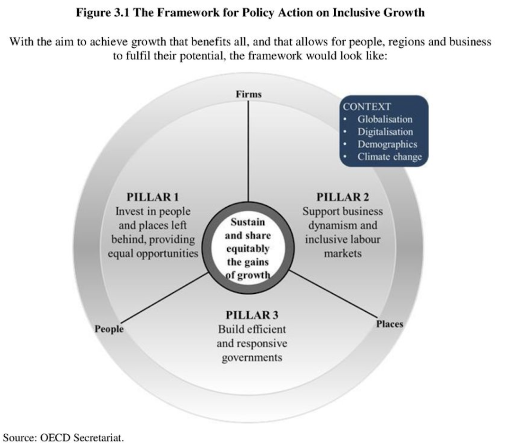

https://www.youtube.com/watch?v=tNfGyIW7aHM
Cross posted on The Mandarin.
The OECD recently published this OECD report on inclusive growth. It’s certainly a Good Thing that the OECD regards alleviating inequality in the light of various things including:
- Sharply rising inequality within many countries – even though global inequality is falling with poorer countries incomes growing much faster than richer countries.
- The equivocal support of the discipline of economics since its turn towards scientism. 1
The report is certainly worth a good look. There’s lots of good information in it. But, like so many similar documents, it’s full of strategisation. When I coined the expression, I described it as a practice which somehow embodies "the primacy of rhetoric (you know all that stuff about ‘our narrative’) over thought”. You'll often see statements to the effect that "because citizens are more and more demanding and governments have limited resources, therefore governments should become more productive".
That's strategisation. Because, if you think about the statement, governments should take any opportunities they can to become more productive whether or not they happen to be in a specific situation, and more to the point, what opportunities governments have to improve their productivity is strictly governed by the facts on the ground, not by some strategic context. If it would be totally great if government improved its productivity, if it would enable the government to provide 'leadership' by doing so, if the Prime Minister promised to do it in his policy speech, it makes no difference. Governments should improve their productivity by as much as they can always and irrespective of the circumstances.
I've called the phenomenon in this post 'deep strategisation' because something similar is going on but it's happening deep inside the structure of discussion. We're making 'strategic' something that is more mundane than that. Since the rise of modernity, a core function of all governments has been tackling inequality – this is nearly as true of the 'free market' US as it is of 'social democratic' Sweden as embodied in their progressive tax and payments arrangements. But now we're packaging this central function up under a name.
Selling the equity agenda by another name
What’s the significance of calling a policy concern with equity the new name ‘inclusive growth’? The fairly clear benefit is that you get to label something, make it sound contemporary and all that, which can be important if you’re trying to interest or ‘sell’ an agenda to people or (as we say these days), if you’re trying to get ‘traction’ for a 'narrative'. But beyond this, the possible gains for the OECD come with likely hazards for clearly thinking through the policy issues and the directness with which we can move on the issue.
Calling it ‘inclusive growth’ means you can kind of start all over again. You can ‘position’ (as we say these days) the whole agenda as a timely reaction to contemporary developments. You can have a new Inclusive Growth Initiative in the OECD, a new topic code in the academic literature and on and on.
But here's the rub – or one of them. The topic of equity is an old one in economics, going back at least to Adam Smith’s moral philosophy:
This disposition to admire, and almost to worship, the rich and the powerful, though necessary to maintain the order of society, is, at the same time, the most universal cause of corruption of our moral sentiments.
That’s quite a statement from the father of modern economic liberalism. In any event, equity started becoming formalised with the formalisation of economics in the half-century or so after 1870. By the end of that period, it was a mainstream underpinning in British economics that, just as Lance Armstrong assures us that 'It’s not about the Bike', (even if we didn't know how right that was at the time) so economics wasn’t about the money.
Money was important, but in the final analysis it was an input, the basic output being ‘utility’, which some of the economists proposed would be accounted for in ‘utils’. This was at a time when economics was seen as just one part of our make-up. But in today’s more conceptually freewheeling, not to say louche world, we call it 'wellbeing' or 'happiness'.
The fact is that, whatever metaphysical entity you’re in pursuit of, it’s commonsensical that, other things being equal, a dollar to the poor will buy you more of it than a dollar to the rich. But there’s no mention of these disciplinary underpinnings that I can see – or find using word searches for “Marshall, Pigou or Pareto”. So all this deep intellectual and cultural background is sloughed off. And we find ourselves back in the eternal present.
Adopting a framework for policy action
I think this matters to the quality of our deliberation, but I can't prove it. But we get closer to more practical implications when we observe the way in which the new agenda is developed – not principally in terms of concrete actions that might be taken in any number of different situations with any number of different systems that governments influence, but rather in terms of new 'frameworks'.
What could be more flatteringly 'strategic' than a framework? It sounds like so much more intellectually sophisticated than a checklist or a list of 'hacks'. And yet, as I've documented in the area of wellbeing, it's amazing how low the reward for effort can be in establishing such frameworks.
In some cases as with the Australian National Development Index or the Canadian Index of Wellbeing, the framework degenerates into complete incoherence. In other cases as with Australia's Treasury, the framework never really gets beyond talking points. It's seen in public speeches but not heard where the decisions are made – not seeping into the agency's thinking or choices in any serious way. More often, as in the case of New Zealand's wellbeing framework, many years go by with frameworks being developed before anything much happens, and when it does, achievements are fairly modest – though this is now getting a shot in the arm from a new government.
I went through this as recently as last week when contacted by an international NGO considering involving itself in wellbeing. They wanted to gain ‘expertise’ on wellbeing. Now there’s some expertise that’s important. There are plenty of niceties and things to become expert on and traps in which one finds oneself in a conceptual madhouse having tried to build a strategic framework for wellbeing. But the main task is getting on with things – identifying actions that optimise the cost-effectiveness of improving wellbeing, most particularly the most promising ‘no-regrets’ measures which deliver on existing objectives but also enhance wellbeing. But somehow the person doing the interviewing kept seeking the imprimatur of august organisations and ‘expertise’. I dare say, she might end up developing a framework.
As I argued in the case of wellbeing, an alternative, far simpler process would be to do what we did with greenhouse gas abatement measures which is to identify 'no-regrets' measures which deliver on the new objective (greenhouse gas abatement, enhancing wellbeing or tackling inequality) without compromising other government objectives – most obviously economic efficiency. We can simply ask, as has been done on numerous occasions here at world Troppo Headquarters (Frameworks and Diagrams Division), what policy moves promote economic efficiency and equity simultaneously. That's likely to provide plenty of action for the short term while one works out more about the 'cost curve' one is facing and then starts to move up it.
And so, promoting ‘inclusive growth’ becomes a matter of adopting new “frameworks”. Indeed the OECD report I’ve linked to is “A framework for policy action”. It’s not even a ‘strategy’ or less grandiosely still “Some ideas for inclusive growth”. And there’s much talk of things needing to be ‘coherent’ implying the strategic interconnection between aspects of policy when so much can be analysed and delivered without such ‘coherence’.
And a lot is lost by packaging it all up as a framework or even a ‘strategy’. A government or other body might want to have a strategy, but equity is relevant to a vast number of policy decisions taken every day. Putting things in this strategised context might promote the prospect of frameworks and strategies amongst the OECD’s member countries and significant other VSPEs (Very Serious Persons and Entities).
Frameworks don’t encourage the kind of improvisational thinking, the kind mutual adjustment between objectives that can lead to big and small ‘hacks’ that together can make a big impact. In addition to a 'cost curve' identifying the lowest hanging fruit, the OECD might produce a kind of ‘how to’ guide that could help keep people’s minds on the implications of all those small policy design decisions. Making something deductible will favour those on high incomes, issuing a tax credit at a uniform rate provides an equal subsidy to all and capping that tax credit swings things against those at the top. 2
There are oodles of similar kinds of rules, but my own experience in government is that lots of people don’t really think like this. (So it is that the left-of-centre ALP ushered in a system which now holds over trillion dollars of Australia’s savings with a flat tax in which those with small, hard earned balances get their savings gobbled up by the best paid industry going round – the finance sector. All breathtakingly unfair, but you can’t make an omelette without breaking some eggs. But I digress.) In any event, in the document, amidst the useful wonkish information, frameworks and diagnosis of existing trends etc, I couldn't see much of this kind of thing.
And as I’ve argued elsewhere 3, talking about over-enthusiasm for strategy sessions amongst senior management, the vast bulk of improvements we can made are modular. Much of this is also true of policy, though there are obvious connections and interactions – most obviously between taxes and transfers.
The strategic diagram
Anyway, I know you want to get on with it. Who doesn't like a strategic diagram? So here it is. It’s got no hacks. But it has got three ‘pillars’. And pillar three is to “build efficient, responsive governments”, which reminds me that it leads on directly to the cure for all known diseases so getting this inclusive growth right has

As you can see, it’s very important that this be a diagram – rather than a list of Good Things for instance. Because in the diagram you can have a circle rather than a rectangle, or a hexagon for instance. And Elton John wrote a song called “The Circle of Life” and it was huge– just HUGE! If he’d written “The Rectangle of Life” do you think he’d be mentioned in this piece? No. Frankly, it would have gone nowhere. If he’d called it “The Hexagon of Life” people would think they were going to see the movie “The Bee King”. Then Concepts would have insisted it be "The Bee Queen" because there are no bee kings. And then where would we be? Who’d want to see "The Bee Queen"? Who’d want to even fund it? Probably not Disney, though their Diversity division might take a second look. And then we’re back to where we were with the rectangle of life – pretty much nowhere.
But I’m being silly. The point of the shape (well so long as you disregard its shape) is that the area in the middle that dominates the diagram of the framework allows us to see structural relations between ideas. So you can see the three propeller blade-like things radiating out from the circle with each triangular segment of the circle focusing on the two domains defined by the propeller blades. (The blades aren't rotating at this stage. Please pay attention, and if you are having any trouble, just think of planes that are sitting in a hangar or in Mussolini's air-force.) So pillar one is between the two propeller blades “firms” and “people”, so naturally it doesn’t relate to the third propeller of “places”. It’s just “Invest in people and places left behind, providing equal opportunities”. Well pretty obviously that's not true – it does relate to places, and not so much to firms. But you get the general idea.
Likewise you’ll see a context. The context is fourfold. Contexts tend to sit towards the top right-hand corner of strategic diagrams, often in oblong shapes of dark blue – as here. That helps us think about – well context – I hope you’re following me here. It’s really pretty easy when you get the hang of it. For simplicity’s sake, there are no other oblong shapes of any colour anywhere else in the diagram. It’s quite important that they not be just splashed any old where, as they help us think about difficult things – and ‘Context’ is quite enough for one diagram. In fact, most of the OECD’s diagrams have just one oblong though often they don’t have just four points in them – three-point and five-point oblongs are not unknown in the OECD’s diagram oeuvre.
Are there any questions?
Footnotes
- At the turn of the 20th century, the economics of Marshall and Pigou was built on the idea that wellbeing or ‘utility’ was the end for which economic resources are the means. The scientism of neoclassical economics and the post-Hayekian promotion of the market as an engine of discovery – the preeminent mechanism by which one discovers economic value – produced our current situation in which economic growth is revered as a more or less absolute value.As an aside, perhaps to be developed in later writing, one could argue that this is one of the distinguishing characteristics between old liberalism and neoliberalism. Here I’m thinking of Philip Mirowski’s tendentious and intemperately expressed, but nevertheless astute argument that post-Hayek neo-liberals came to think of a market not just as a means of accessing distributed knowledge. They came to regard it as the preeminent epistemological device. Taken to its logical conclusion, this leads to a kind of reductio ad absurdem for issues like greenhouse emissions where there can be no market valuation of its importance outside of state action.
- Australia makes charitable giving deductible and, as I understand it, Britain offers a tax credit at a uniform rate.
- “It’s a mercy that things are ‘modular’ like this, because improving things is hard enough. But truly strategic discussion begins where this is not the case — where one aspect of an organisation implicates others with strategy seeking to understand, illuminate and then work constructively with this relationship”.
Governments are not single entities for such purposes as increasing productivity, but many components charged with many unrelated tasks for the benefit of many different segments of the population, which have different ideas of what is desirable or feasible. Improvements to productivity must start with specifics. My suggestion is to give more autonomy and initiative to particular agencies but audit them more closely. The audit would be done by a mixed group of specialists in the field and of clients of the agency selected by a suitable statistical procedure. Nopoliticiams.
hilarious, thanks. There is so much of this stuff going round, its amazing. I try to see it as "unemployment with dignity". I often fail and get angry, which I really shouldnt because this stuff IS the answer to AI and machines. There's no way they can compete with our new frameworks. Or is there? Maybe we need a committee to look into that.
;-)
Hi, you might be right that "inclusive growth" is simply "repositioning" the the policy agenda on equity. However, I'd like to defend the term "inclusive growth" on the following grounds:
(i) First, I see "inclusive growth" as one of the three key challenges facing our generation today, the others being climate change and the refugee crisis. We need to watch out that "secular stagnation" does not take hold of the global economy the way it seems to have taken hold in Japan, and possibly Europe and the US. It's not just "equity" that we care about. We also want growth, as growth covers many harms. On the other hand, we don't just want growth. We want equitable growth. I tend to think that the backlash in the US and Britain against global trade and immigration could have been avoided had US and British governments ensured that the benefits of global trade and immigration were fairly distributed.
(ii) Second, I have found that many people (not necessarily conservative) are strongly opposed to any form of redistribution. On the other hand, they are less opposed if I tell them that the role of government is not to redistribute wealth per se, but to ensure that growth is "inclusive". Ideally, we want growth to be faster for the less well-off than growth for the well-off (as it once was in post-war Britain and US). If we manage to have sustained inclusive growth, then inequality in society will gradually melt away.
I think there are behavioural reasons for the opposition to "redistribution". Psychologists tell us that people hate losses more than they enjoy gain. (I think this is the insight in Kahneman's "Prospect Theory".) Economists usually overlook this asymmetry between "loss" and "gain", but it seems primordial. It is fear that lead people to vote for Brexit, and fear that cause people to vote for Trump. Even if it come across as a "rhetorical device" or "strategisation", I would focus on "inclusive growth" as a means to achieve equitable outcomes.
BTW, I haven't yet read the OECD report, and perhaps on reading it, I may well have the same reaction as you have! (Also, thanks for alerting me to the OECD report.)
Thanks Kien, I included the reasons you've quoted as reasons to support the terminology – to which I don't really object. I object to the package it comes in – which is to largely ignore a whole disciplinary history on the subject.
I haven't spoken much about redistribution – I've spoken about "equity" which isn't a loaded or negative term, but as I think my post makes fairly clear, I'm not too concerned about the language, but the confused and grandiose thinking and all the 'frameworks' that it comes with.
Most amusing. Your frustration is shared. Statements of the form: ‘because X, therefore Y’ are simply polemic vehicles to assert the validity of clause X before your brain has time to process it - in your example, ‘citizens are more demanding and governments have limited resources’ - meaning that poor governments are having a hard time just keeping their head above water as it is, so how much more can we expect really. You can see the PR consultants sweating over each one of these.
My pet hate is use of the word ‘reform’. Now every minor policy tweak is ‘reform’. So, any policy change that really does change the form of something can’t use that word with effect because it’s completely debased.
On inequality; it is a deep assumption in policy debate that less inequality is always better. The idea that inequality might create benefits is absent so therefore the idea of some ‘right’ or even optimal level of inequality is not a concept that exists in the discussion. Jordan Peterson would probably claim that this is because the radical left, which politically dominates the inequality debate, chooses those on the bottom of whatever particular hierarchy is being discussed – income, gender, race, privilege etc – as the ‘human shield’ in their Nietzschean quest for power. Maybe there’s something to that. Note that I didn’t say I wasn’t in favour of more equality, I am.